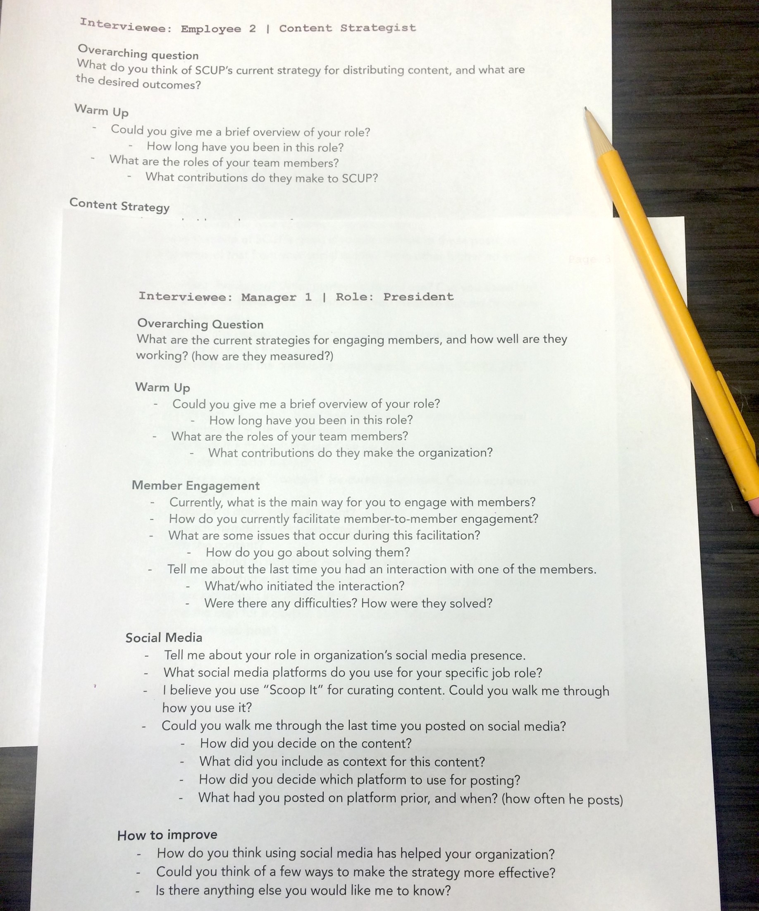
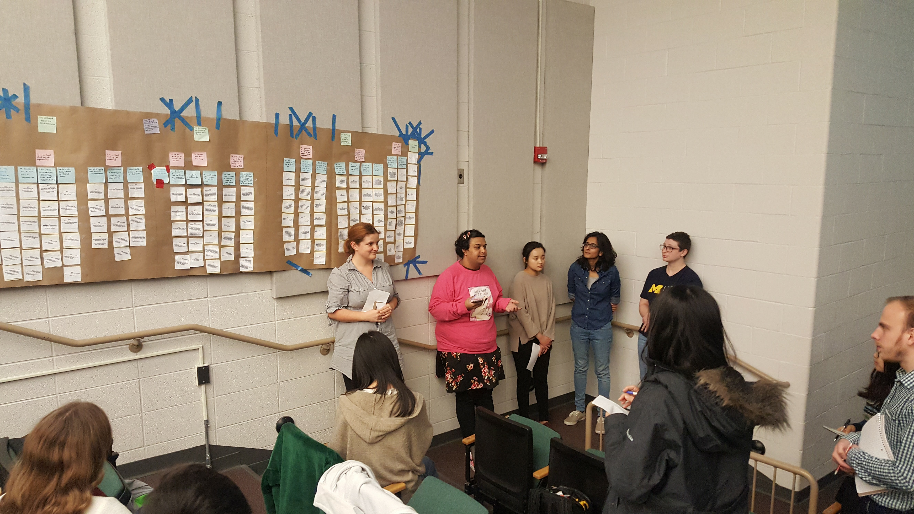

1. CLIENT BACKGROUND
Society for College and University Planning, abbreviated SCUP,
is a non-profit association that helps universities and college
campuses plan for higher education. As of 2016, SCUP has over 5000
members across 35 countries. SCUP’s mission is to enable colleges and
universities plan more effectively and create more success in higher
education.
2. CHALLENGE
SCUP uses a number of social media platforms to provide content to its
members and raise awareness about its events and activities.
Our challenge was to help SCUP develop a social media strategy to drive
engagement and enable delivery of value to SCUP’s audience.
3. PROCESS
3.1 BACKGROUND RESEARCH
We divided the scope of secondary research amongst us.
We studied SCUP's background to understand their mission, vision, and business model.
We evaluated SCUP's exisiting social media content and acitivity.
We also drew insights from popular blogs and peer-evaluated literature to
shape our knowledge of social-media usage among non-profits.
3.2 CONTEXTUAL INQUIRY
We conducted contextual inquiry with six SCUP staff members, including managers and employees,
who were most able to speak to SCUP’s social media problem.
Based on initial client meetings and background research, we prepared
interview protocols about the employees' responsibilities and interactions
with SCUP’s social media. The interviews took place at SCUP’s office in
Ann Arbor. For each interview, two members of the team were present,
one as facilitator and one as notetaker. The interviews averaged about
one hour in length.

3.3 ANALYSIS & FINDINGS
We analyzed the interview data by conducting an eight-hour long affinty wall session.
Our main findings were :
-
SCUP was having a problem demonstrating the value of being a member to
its audiences. This was largely due to a lack of agreement on SCUP’s
current and desired target populations.
-
Social media was being approached as a tool of information broadcast
and not as a means of social interactions. Too many platforms were being used
without evaluating the engagement across them.
-
Our interviews revealed confusion surrounding job roles and responsibilities with regard to social media.
The internal team structure of SCUP was undergoing an overhaul, leaving no one specifically tasked with social media.

4. RECOMMENDATIONS
We realized that SCUP may face significant turnaround time on execution of all recommendations.
Bearing this in mind, we organized our recommendations into 2 phases.
4.1 SHORT TERM SOCIAL MEDIA RECOMMENDATIONS
We recommended turning off all social-media except Twitter until target audience had been identified.
The secondary research had shown people wanted to engage with other people,
not organizations. We therefore suggested that employees maintain their own
accounts with connection to SCUP. Staff members could share issues they were interested in on SCUP’s social media as themselves and not as SCUP.
4.2 LONG TERM SOCIAL MEDIA RECOMMENDATIONS
Multiple interviewees had cited a need for market research. Our primary recommendation
was determining target social media audience based on market research. We also
urged the director of SCUP to have one staff member champion social media, instead
of multiple employees being involved in different phases of the strategy.